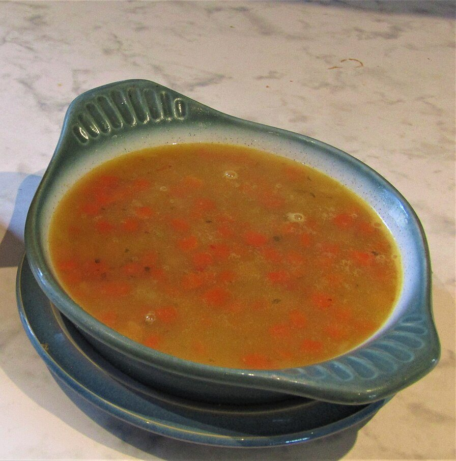
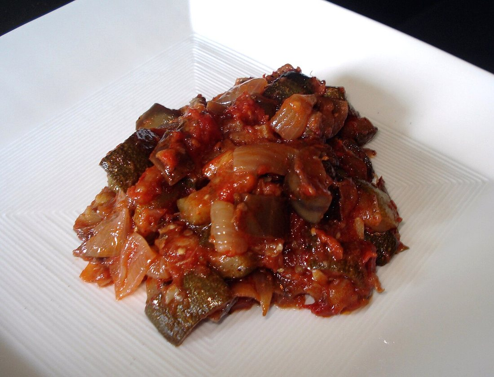
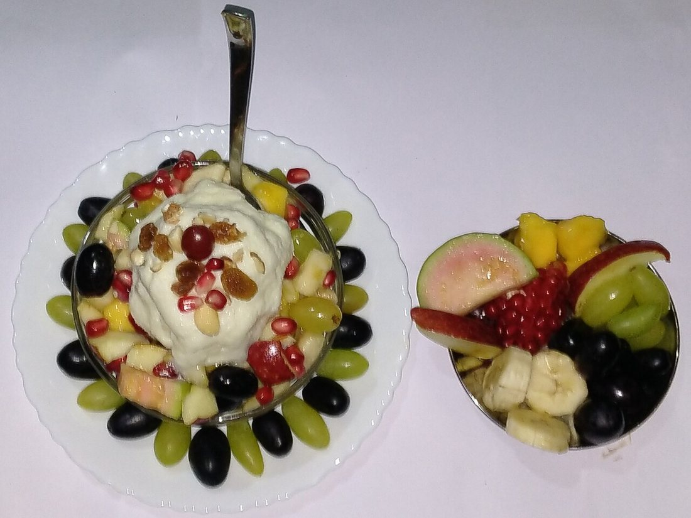
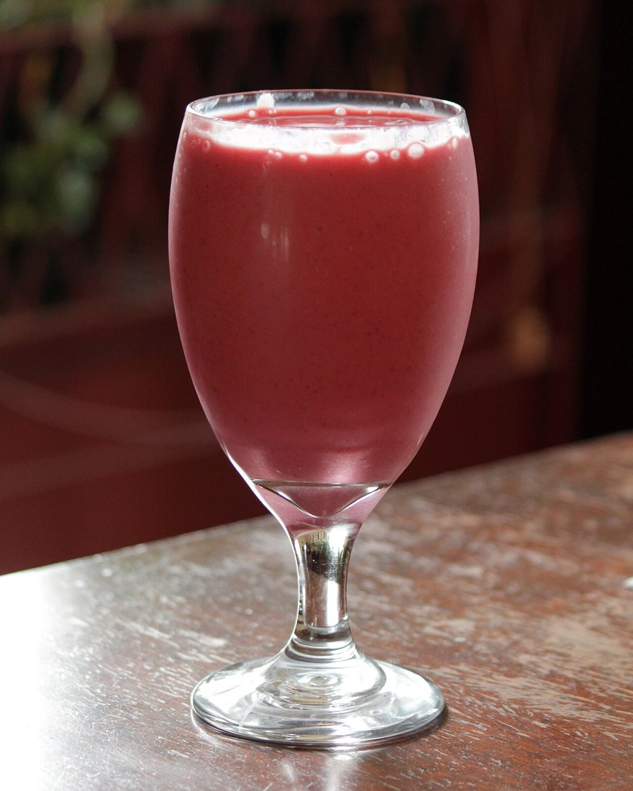
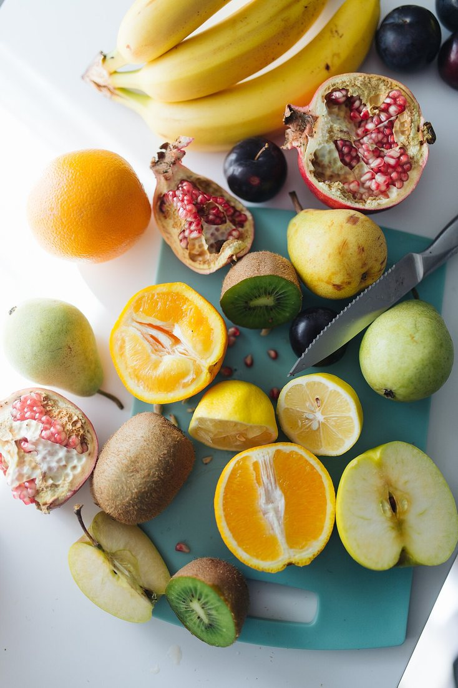
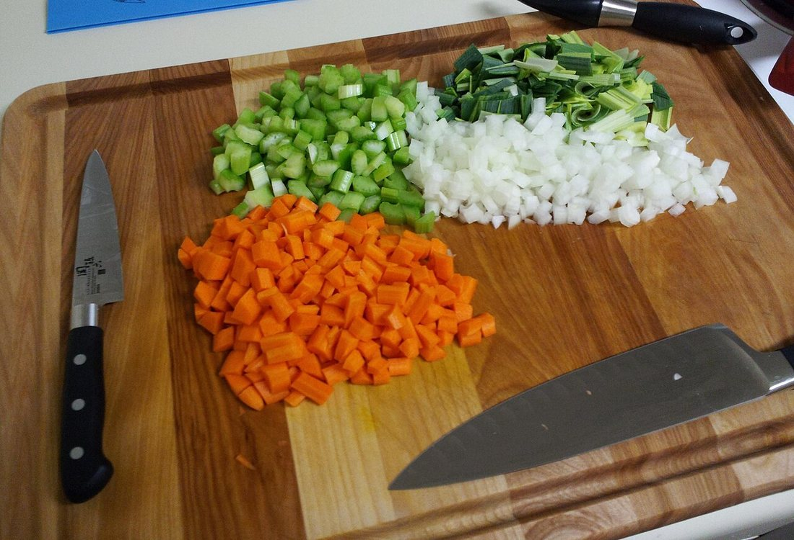

Көркем еңбек · 4-бөлім · Тағам әзірлеу технологиясы Art & Craft · Section 4 · Food Preparation Technology Художественный труд · Раздел 4 · Технология приготовления пищи
🥗 Көкөніс пен жемістен жасалатын тағамдар
🥗 Dishes from Vegetables & Fruits
🥗 Блюда из овощей и фруктов
Денсаулыққа пайдалы, дәмді әрі әдемі тағамдарды дұрыс дайындау. Preparing healthy, tasty and beautiful dishes the right way. Как правильно готовить полезные, вкусные и красивые блюда.
Көкөніс пен жеміс — дұрыс тамақтанудың негізі. Оларда дәрумендер, минералды заттар және талшық мол, ал майы мен калориясы аз. Күн сайын дастарханда жаңа піскен көкөніс пен жеміс болуы керек. Олардан салат, суп, рагу, гарнир, десерт, сусын дайындауға болады. Бұл тағамдардың дәмі мен пайдасы көп жағдайда дұрыс дайындау тәсіліне байланысты: артық қайнатса, дәрумендер бұзылады. Сондықтан көкөністі тез әрі ұқыпты пісіру маңызды. Vegetables and fruits are the basis of healthy eating. They are rich in vitamins, minerals and fibre, yet low in fat and calories. Fresh vegetables and fruit should be on the table every day. From them you can make salads, soups, stews, side dishes, desserts and drinks. The taste and the benefit of these dishes depend largely on the right cooking method: overcooking destroys the vitamins. So it is important to cook vegetables quickly and carefully. Овощи и фрукты — основа правильного питания. В них много витаминов, минеральных веществ и клетчатки, но мало жира и калорий. Свежие овощи и фрукты должны быть на столе каждый день. Из них можно готовить салаты, супы, рагу, гарниры, десерты и напитки. Вкус и польза этих блюд во многом зависят от правильного способа приготовления: при долгой варке витамины разрушаются. Поэтому овощи важно готовить быстро и аккуратно.
Неліктен пайдалы: дәрумендер Why They Are Healthy: Vitamins Чем полезны: витамины
Әр дәрумен организмге өзінше қажет — сондықтан тағам әртүрлі болуы керек. Each vitamin helps the body in its own way — so food should be varied. Каждый витамин нужен организму по-своему — поэтому питание должно быть разнообразным.
| Витамин | Где много | Зачем нужен |
|---|---|---|
| A | Морковь, тыква, абрикос | Для зрения, кожи и роста. |
| C | Перец, капуста, цитрусы, смородина | Укрепляет иммунитет, защищает от простуд. |
| группа B | Зелень, бобовые, картофель | Для нервной системы и энергии. |
| Клетчатка | Почти все овощи и фрукты | Помогает пищеварению. |
| Дәрумен | Қайда көп | Не үшін қажет |
|---|---|---|
| A | Сәбіз, асқабақ, өрік | Көру, тері және өсу үшін. |
| C | Бұрыш, қырыққабат, цитрус, қарақат | Иммунитетті нығайтады, суық тиюден қорғайды. |
| B тобы | Көкшөп, бұршақ, картоп | Жүйке жүйесі мен қуат үшін. |
| Талшық | Барлық дерлік көкөніс-жеміс | Ас қорытуға көмектеседі. |
| Vitamin | Found in | What it is for |
|---|---|---|
| A | Carrot, pumpkin, apricot | For eyesight, skin and growth. |
| C | Pepper, cabbage, citrus, currant | Strengthens immunity, protects from colds. |
| B group | Greens, legumes, potato | For the nervous system and energy. |
| Fibre | Almost all vegetables and fruit | Helps digestion. |
Тағам түрлері Kinds of Dishes Виды блюд
🔍 Толық суретін көру үшін кез келген тағамды басыңыз. 🔍 Tap any dish to see the full photo. 🔍 Нажмите на любое блюдо, чтобы увидеть фото целиком.






Дайындау тәсілдері Methods of Cooking Способы приготовления
ШикідейRawВ свежем виде
Турап, салат жасау. Дәрумен ең көп сақталады.Chopped into salads. Keeps the most vitamins.Нарезка в салат. Сохраняет больше всего витаминов.
ҚайнатуBoilingВарка
Суда не буда пісіру. Аз сумен, тез пісіру жақсы.In water or steam. Best with little water and quickly.В воде или на пару. Лучше в малой воде и быстро.
БұқтыруStewingТушение
Аз сұйықтықпен жабық ыдыста пісіру. Жұмсақ болады.In a covered pot with little liquid. Comes out soft.В закрытой посуде с малой жидкостью. Получается мягким.
Қуыру / пісіруFrying / bakingЖарка / запекание
Майда қуыру не пеште пісіру. Сирек, аз маймен.Fried in oil or baked. Rarely, with little oil.На масле или в духовке. Реже, с малым маслом.
Бастапқы өңдеу және тазалық First Preparation & Hygiene Первичная обработка и гигиена
Кез келген тағам осы қадамдардан басталады. Any dish begins with these steps. Любое блюдо начинается с этих шагов.

🔍 Үлкейту үшін басыңыз🔍 Tap to enlarge🔍 Нажмите, чтобы увеличить
Қолды жуу.Wash hands.Вымыть руки. Тамаққа кіріспес бұрын қолды сабындап жуамыз.Wash your hands with soap before cooking.Перед готовкой моем руки с мылом.
Жуу.Rinse.Промыть. Көкөніс пен жемісті ағын сумен жақсылап жуамыз.Wash the vegetables and fruit well under running water.Овощи и фрукты тщательно моем под проточной водой.
Тазалау.Peel.Очистить. Қажет болса қабығын аршимыз, бүлінген жерін аламыз.Peel if needed and cut away any bad spots.При необходимости чистим кожуру, срезаем испорченное.
Турау.Cut.Нарезать. Бірдей тілімдерге тураймыз — пісу біркелкі болады.Cut into even pieces so they cook evenly.Режем на ровные кусочки — готовятся равномерно.
Әрлеу.Serve nicely.Оформить. Тағамды әдемі ыдысқа салып, көкшөппен безендіреміз.Serve on a nice plate and garnish with greens.Подаём на красивой тарелке, украшаем зеленью.
✅ Есте сақта ✅ Remember ✅ Запомните
1
Көкөніс-жемісті әрқашан жуып барып қана жейміз не пісіреміз.Always wash vegetables and fruit before eating or cooking.Всегда моем овощи и фрукты перед едой и готовкой.
2
Дәруменді сақтау үшін тез әрі аз сумен пісіреміз.Cook quickly and with little water to keep the vitamins.Чтобы сберечь витамины, готовим быстро и в малой воде.
3
Пышақпен жұмыс істегенде абай бол: саусақты бүгіп ұста.Be careful with a knife: keep your fingers tucked in.С ножом осторожно: пальцы держим подогнутыми.
Көкөніс пен жемістен жасалған тағам — денсаулық пен әсемдіктің көзі. Жаңа піскен өнімді таңда, дәрумен сақталатындай дұрыс әзірле, тағамды әдемі әрлеп бер — сонда қарапайым салат та мерекелік көрінеді. Dishes made from vegetables and fruit are a source of health and beauty. Choose fresh produce, cook it so the vitamins survive, and serve it nicely — then even a simple salad will look festive. Блюда из овощей и фруктов — источник здоровья и красоты. Выбирай свежие продукты, готовь так, чтобы сохранить витамины, и красиво подавай — тогда даже простой салат будет выглядеть празднично.